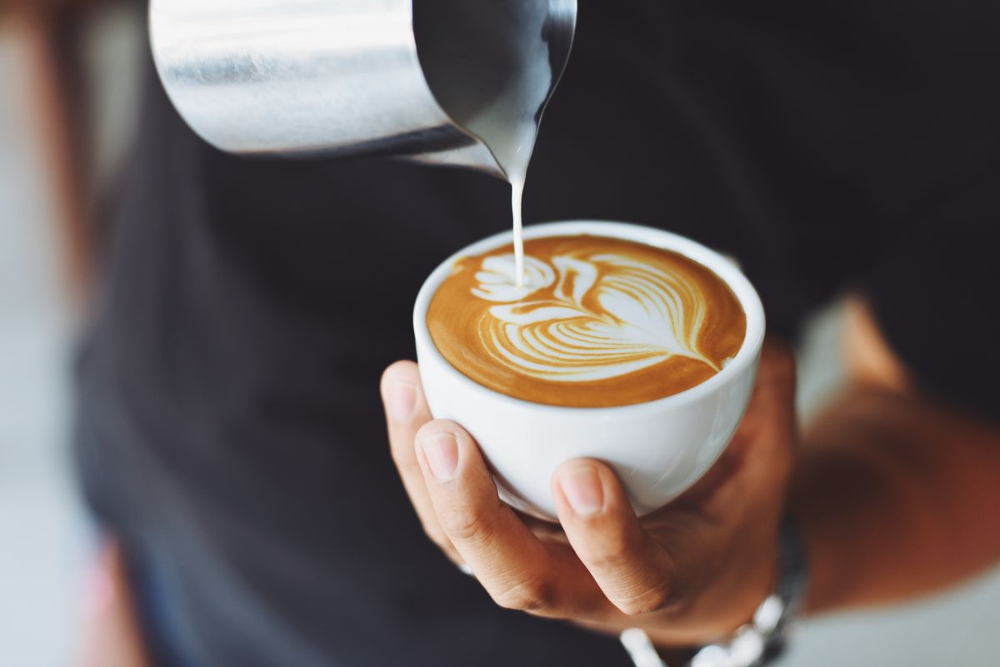
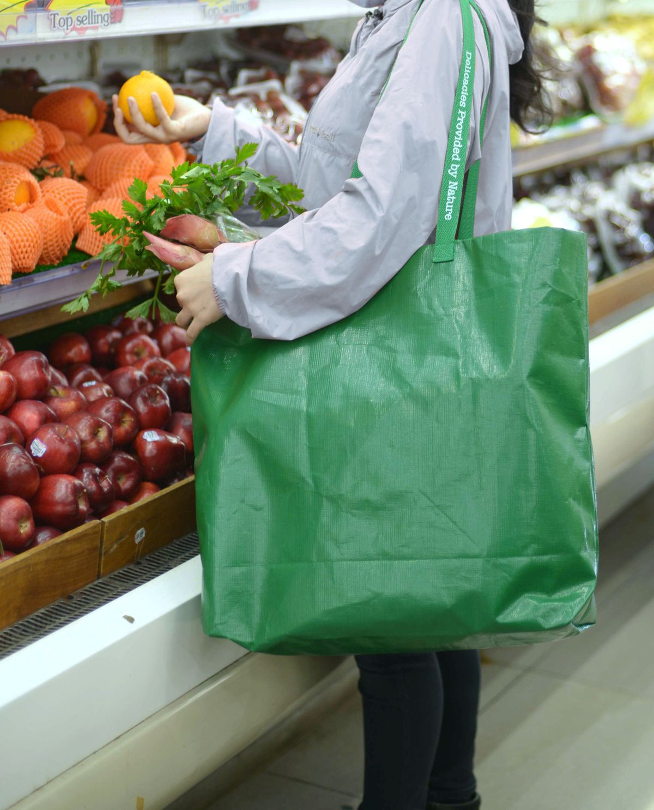
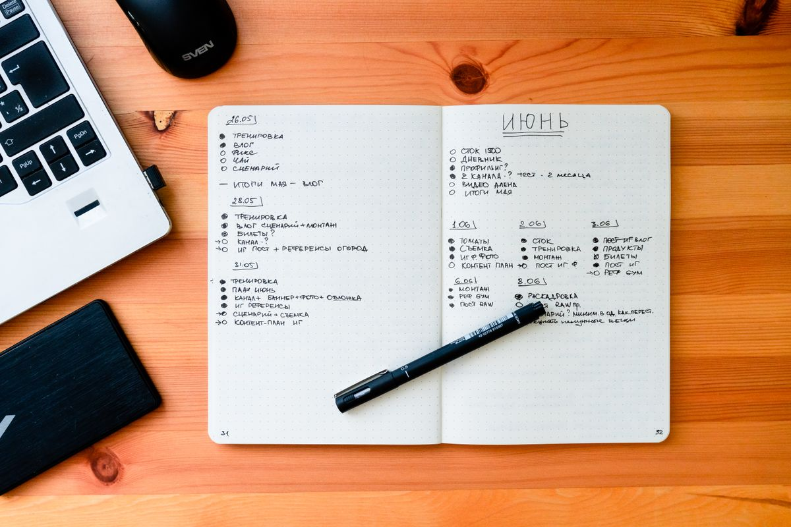

Продажи кофейни
В какие дни покупают больше кофе? Сравни продажи и спланируй закупки.
Учебный проект / анализ данных с нуля
От первой таблицы до понятного вывода. Разберись, как задавать вопросы данным, замечать закономерности и проверять свои догадки.
Без регистрации. Без оплаты. Можно начать с нуля.
в четверг относительно
понедельника. А почему?
01 / О проекте
Для студентов любых направлений
DataStart — короткое знакомство с анализом данных. Здесь ты попробуешь превратить наблюдение в проверяемый вывод на простом примере из повседневной жизни.
Это самостоятельный учебный материал: без записи на курс, оценок и сертификатов. Для начала достаточно любопытства и базовой арифметики.
В повседневной жизни

В какие дни покупают больше кофе? Сравни продажи и спланируй закупки.

На что уходит больше денег? Раздели расходы по категориям и сравни месяцы.

Сколько времени занимают разные задания? Запиши наблюдения и найди самые затратные этапы.
02 / Маршрут
Пройди их на примере кофейни, а затем повтори со своей таблицей: расходами, результатами опроса или учебным расписанием.
Что именно хочешь узнать? Вместо «как дела у кофейни» спроси: «Как изменились продажи с понедельника по четверг?»
Проверь пропуски, повторы и единицы измерения. Убедись, что сравниваешь продажи за одинаковые часы.
Найди среднее и изменение в процентах. Построй столбчатую диаграмму, чтобы увидеть различия между днями.
Ответь на исходный вопрос. Отдели факт от догадки и укажи, каких данных не хватает для объяснения причин.
Студенческая кофейня записала продажи с 9:00 до 12:00 за четыре дня. Все значения — количество проданных чашек.
Сколько чашек продавали в среднем за утро? На сколько процентов изменились продажи в четверг относительно понедельника?
Подсказка: среднее = сумма ÷ количество дней.
Изменение, % = (новое − исходное) ÷ исходное × 100.
| День | Чашек |
|---|---|
| Понедельник | 20 |
| Вторник | 30 |
| Среда | 25 |
| Четверг | 25 |
В среднем — 25 чашек за утро.
(20 + 30 + 25 + 25) ÷ 4 = 25.
Продажи выросли на 25%.
(25 − 20) ÷ 20 × 100 = 25%.
Рост между двумя днями не означает, что продажи растут каждый день. Во вторник продали больше, чем в четверг. Чтобы объяснить изменения, нужны дополнительные данные: например, о посещаемости и акциях.
04 / Инструменты
Начни с таблиц. SQL и Python пригодятся, когда захочется работать с более сложными данными. Ссылки ведут на внешние сайты проектов.
Вводи данные, используй формулы и строй первые диаграммы. Попробуй перенести сюда таблицу из задачи.
Познакомиться с CalcВыбирай нужные строки и объединяй данные. Следующий шаг — посчитать продажи по дням с помощью запроса.
Справочник SQLite (EN)Автоматизируй повторяющиеся расчёты. Загрузи таблицу из файла и найди среднее несколькими строками кода.
Уроки pandas (EN)05 / Вопросы
Для этого маршрута — нет. Задачу можно решить на бумаге или с калькулятором. Программирование пригодится позже, когда объём данных и число повторяющихся действий вырастут.
Для начала достаточно сложения, деления и процентов. Здесь ты используешь среднее арифметическое и относительное изменение. Обе формулы есть в подсказке к задаче.
Чтобы прочитать маршрут и решить задачу, достаточно браузера. Для самостоятельных экспериментов с таблицами можно установить Calc по ссылке в блоке инструментов.
Нет. DataStart — открытый учебный лендинг для первого знакомства с анализом данных. Здесь нет регистрации или выдачи сертификатов.
Собери небольшую таблицу собственных расходов за неделю. Проверь категории, посчитай сумму по каждой и построй диаграмму. Сформулируй один вывод и один вопрос, на который пока не хватает данных.
Один вопрос, четыре дня и немного арифметики.